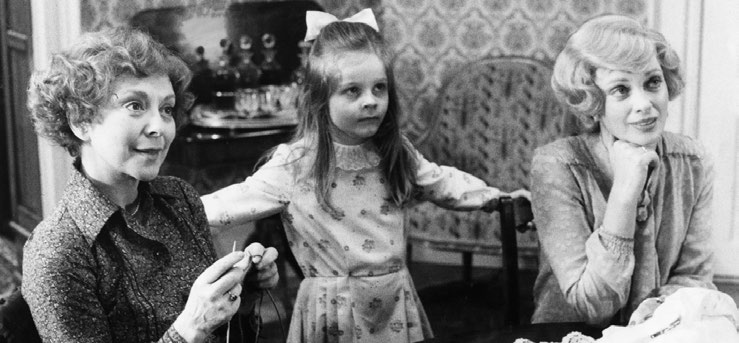
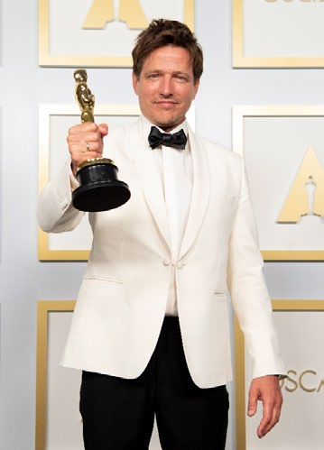
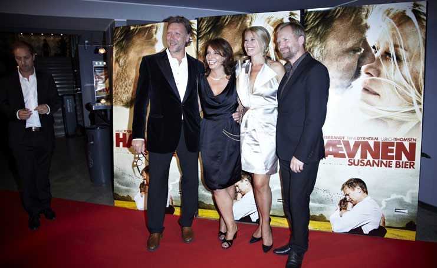
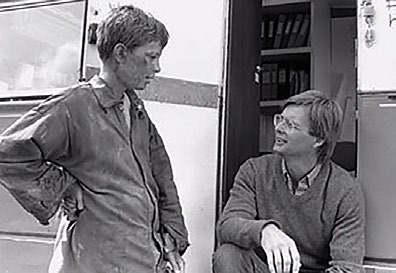

5.7 – FILM
sidde 168
En række danskere er i tidens løb blevet internationalt berømte som filmskue spillere eller som instruktører. Omkring år 1900 blev de første film optaget i Danmark. Det var reportager om samfundet. I 1906 blev Nordisk Film grundlagt. Herefter voksede den danske filmindustri hurtigt og blev kendt i mange lande.
Asta Nielsen (1881-1972) var Danmarks første filmstjerne. Hun fik stor succes med roller i stumfilm og indspillede mange film i Tyskland i første halvdel af 1900-tallet. Hun blev fejret for sin erotiske udstråling og sine evner til at udtrykke hele følelsesregisteret på lærredet. Asta Niels
Asta Nielsen.
Carl Th. Dreyer (1889-1968) er den ældre danske filmhistories vigtigste instruktør. Film som Vredens Dag fra 1943 og den franske La passion de Jeanne d’Arc (Jeanne d'Arcs Lidelse og Død) fra 1928 har sikret Dreyer berømmelse. Dreyers nærbilleder og langsomme filmtempo udmærkede hans film. Hans film Ordet fra 1955 bygger på et drama af Kaj Munk, og filmen kulminerer med en scene, hvor en ung mor vækkes til live fra de døde. Dreyer skildrer det gribende mirakel med en fremragende brug af nærbilleder og klip.
Tidlige filmklassikere er desuden Astrid Henning-Jensen (1914-2002) og Bjarne Henning-Jensens (1908-95) Ditte Menneskebarn (1946) efter roman af Martin Andersen Nexø, Johan Jacobsens (1912-72) Soldaten og Jenny (1947) og Henning Carlsens (1927-2014) Sult (1966) efter roman med samme navn af den norske forfatter, Knut Hamsun. De tre film har fattigdom og udstødelse som temaer og bygger på henholdsvis romaner og skuespil.
Ditte Menneskebarn foregår i begyndelsen af det 20. århundrede og handler om en fattig pige, der er født uden for ægteskab og udsættes for vold og mishandling. Hun bliver også selv gravid uden at være gift og er fanget i fattigdommens onde cirkel. Soldaten og Jenny skildrer forholdet mellem en ung kvinde og en soldat,
Læremateriale Til Indfødsretsprøven
sidde 169
der tilfældigt mødes på en bar. Jenny har tidligere fået foretaget en abort, som dengang var forbudt, og trues nu af straf og udstødelse. Henning Carlsens Sult foregår i slutningen af 1800-tallet og handler om en ung forfatter, der strejfer rundt i Norges hovedstad Kristiania (det nuværende Oslo). Han er blevet smidt ud af sit lejede værelse og har ikke penge til mad. Han prøver at pantsætte sine få ejendele, selv sine briller og knapperne i sit tøj, og han ydmyger sig for at skaffe et job. Hans situation bliver mere og mere desperat, alt imens han færdes blandt byens borgere, som om han ikke har problemer.
Perioden fra 1950 til 1975 var en storhedstid for kommercielle folkekomedier. Den største succes og Danmarks mest sete film blev Alice O’Fredericks (18991968) og Jon Iversens (1889-1964) filmatisering af Morten Korchs (1876-1954) roman De røde heste (1950). Filmen fortæller den dramatiske historie om, hvordan en ung landmand redder sin gård fra at falde i skurkes hænder ved at vinde et stort hestevæddeløb.
Erik Balling (1924-2005) lærte af folkekomedierne og begejstrede publikum med filmserien Olsenbanden på i alt 14 film, den første fra 1968. Filmene er inspireret af tegnefilm og handler om en fiktiv dansk forbryderbande. Med Egon Olsen som leder har banden store, snedige planer for at begå et kup, der skal gøre dem til millionærer, men som den for det meste kommer helt galt afsted med på en måde, som man må grine af. Filmserien blev kopieret i Norge og Sverige og var populær med tysk tale i det kommunistiske Øst-Tyskland.
Også på tv var Erik Balling en meget brugt instruktør. Tv-serien Matador udspiller sig i 1930’ernes og 1940’ernes Danmark. Rammen om fortællingen er den fiktive sjællandske provinsby Korsbæk. Vi følger dens indbyggere og oplever deres familieliv, karriere, kærlighed og kamp med kønsrollerne. Tidens normer og vigtige historiske begivenheder bliver beskrevet. Seriens 24 afsnit blev første gang vist i fjernsynet i 1978-82 og er senere genudsendt talrige gange. Matador er den mest sete tv-serie i Danmark nogensinde. Manuskriptet er især blevet skrevet af forfatteren Lise Nørgaard (1917-2023). Mange begivenheder i serien er inspireret af hendes egen barndom og ungdom.Tv-serien Matador. Foto: Børge
Tv-serien Matador. Foto: Børge Lassen/Ritzau Scanpix.
Læremateriale Til Indfødsretsprøven

sidde 170
Film for børn er en vigtig del af dansk filmkunst. Busters Verden (1984) af Bille August (født 1948) er en klassiker inden for denne genre. Busters verden baserer sig på en roman af den populære børnebogsforfatter Bjarne Reuter (født 1950). I filmen møder vi Buster, der har det svært både derhjemme og i skolen, hvor han altid bliver mobbet. Men hans fantasi og evner for tryllekunst hjælper ham igennem mange af vanskelighederne. I 1982 gav Folketinget danske børnefilm bedre økonomiske vilkår og anerkendte dermed børnefilmgenrens kunstneriske betydning.
Der blev også produceret fremragende film om børn og unge, som også var for voksne. Nils Malmros (født 1944) instruerede for eksempel en lang række film om unge, blandt andre Kundskabens træ (1981). Filmen handler om mobning og forelskelser i en klasse af pubertetsbørn. Nogle kammerater bliver lukket ude af fællesskabet, og kæresteforhold begynder og slutter meget pludseligt. De voksne – både lærerne på skolen samt forældrene – forstår ikke de unges liv og deres forhold til hinanden. Mange biografgængere – unge som voksne – genkendte ofte sig selv i Malmros’ skildring af den tidlige ungdom.
Dogme 95 var et manifest, som instruktørerne Lars von Trier (født 1956) og Thomas Vinterberg (født 1969) i 1995 skrev sammen med Søren Kragh-Jacobsen (født 1947) og Kristian Levring (født 1957). De fire ”dogmebrødre” forpligtede sig til at lave enkle film med fokus på den gode historie frem for de tekniske effekter. Dogme 95 vakte opsigt, og flere dogmefilm blev store succeser både blandt publikum og kritikere i Danmark og udlandet. Lars von Triers første dogmefilm var Idioterne (1998), der handler om en flok voksne mennesker, som vil provokere omgivel serne og realisere sig selv ved at spille ”idioter”, det vil sige retarderede.
Filmen afslører på humoristisk og tragisk vis både gruppens selvopta gethed og omgivelsernes manglende tolerance. Lars von Trier vandt desuden i 2000 Den Gyldne Palme for musical filmen Dancer in the Dark (2000), der havde den islandske sangerinde Björk i hovedrollen.Thomas Vinterberg vandt en Oscar for filmen ’Druk’. Foto: Matt Petit/Ritzau Scanpix.
Thomas Vinterberg vandt en Oscar for filmen ’Druk’. Foto: Matt Petit/ Ritzau Scanpix.
Thomas Vinterbergs familiedrama Festen (1998) vandt juryens special pris (Prix du Jury) på filmfestivalen i Cannes i Frankrig i 1998, mens en anden af hans film Druk (2020) vandt en Oscar i 2021. I Druk forsøger fire gymnasielærere at gøre sig selv og deres liv mere spændende ved at drikke, så de har alkohol i blodet hele dagen. Det går godt i begyndelsen, men efterhånden kommer det ud af kontrol og ender i en tragisk ulykke.
Læremateriale Til Indfødsretsprøven

sidde 171
Men det er også en film om at slippe kontrollen i sit liv, at vågne op, mærke livet, begynde at leve igen – og hvilke konsekvenser det kan have. Ulykken i filmen er for Thomas Vinterberg en konsekvens af at mærke livet.Susanne Bier (nr. 2 til venstre) til gallapremiere på Hævnen i biografen Imperial i København
Susanne Bier (nr. 2 til venstre) til gallapremiere på Hævnen i biografen Imperial i København sammen med tre af skuespillerne fra filmen. Foto: Bo Nymann/ Ritzau Scanpix.
Også instruktørerne Gabriel Axel (1918-2014), Bille August og Susanne Bier (født 1960) har modtaget international anerkendelse. Gabriel Axel vandt som den første danske instruktør en Oscar for filmatiseringen af Karen Blixens fortælling Babettes Gæstebud (1987) i 1988 om, hvordan en streng kristen menighed, der fornægter livets goder, en dag får serveret et overdådigt måltid og derfor pludseligt bliver gladere og bedre mennesker.
Bille August vandt både en Oscar og De Gyldne Palmer for filmen Pelle Erobreren (1987). Filmen er baseret på Martin Andersen Nexøs verdensberømte roman fra begyndelsen af det 20. århundrede. Susanne Bier har vundet både en Oscar og en Golden Globe for Hævnen (2010), som sætter fokus på i hvilke situationer i livet, det er henholdsvis rigtigt og forkert at hævne sig på andre.Pelle Erobreren af Bille August.
Pelle Erobreren af Bille August.
Læremateriale Til Indfødsretsprøven


sidde 172
En af det 21. århundredes mest fremtrædende skuespillere er Mads Mikkelsen (f. 1965). Mads Mikkelsen har modtaget prisen for bedste mandlige skuespiller ved Cannes Filmfestival 2012 for rollen i ’Jagten’ (2012) som pædagogmedhjæl peren Lucas, der bliver falsk anklaget for pædofili. Han bliver udstødt af alle i landsbyen, og snart har han hverken arbejde, venner, kæreste eller søn. Endvi dere spiller han den ene af de fire gymnasielærere i Druk, hvor den uinspire rende, usikre og uengagerede historielærer Martin vågner op til ukendelighed, når først han får alkohol i kroppen. Han genvinder arbejdsglæden og med den også selvtilliden, der på ny engagerer og motiverer elevernes interesse for faget.
Mads Mikkelsen har også haft roller i store udenlandske film, herunder i James Bond-filmen Casino Royale (2006). Her er Mads Mikkelsen James Bonds hoved modstander, der til sidst bliver skudt og dræbt af en terrorist, som spilles af danske Jesper Christensen (f. 1948).Mads Mikkelsen (f. 1965). Foto: Loic Venance/
Mads Mikkelsen (f. 1965). Foto: Loic Venance/Ritzau Scanpix.
Jesper Christensen havde i øvrigt hovedrollen som alkoholikeren Kaj i filmen Bænken (2000), der er et portræt af Danmarks socialt belastede miljøer. Kaj har været på kontanthjælp i mange år, forsømmer konsekvent kommunens aktive ringstilbud og tilbringer de fleste af dagens timer på en bænk i et socialt bolig byggeri i en københavnsk forstad i selskab med masser af øl, spiritus, cigaretter og kvarterets øvrige alkoholikere. Kaj har en datter, han ikke har set i 20 år, og da hun en dag tilfældigvis flytter ind i ejendommen, står han pludselig ansigt til ansigt med sin fortid, sin manglende ansvarsfølelse og sit forspildte liv. I Drabet (2005), som er den ene af to opfølgere til Bænken, spiller Jesper Christensen en gymnasielærer, der på grund af erotiske følelser for en tidligere elev mister sin moralske dømmekraft, da eleven begår et drab på en politibetjent i en politisk sags tjeneste.
Læremateriale Til Indfødsretsprøven
sidde 173
Sofie Gråbøl (f. 1968) som Sarah Lund i tv-serien Forbrydelsen. Foto: Linda Johansen/ritzau Scanpix.
Sofie Gråbøl (f. 1968) som Sarah Lund i tv-serien Forbrydelsen. Foto: Linda Johansen/ritzau Scanpix.
Sofie Gråbøl (f. 1968) har spillet flere hovedroller som lidt usikre, akavede personer. Hun blev for alvor kendt i filmatiseringen fra 1986 af Tove Ditlevsens roman Barndommens Gade i hovedrollen som den 14-årige Ester, som vokser op på Vesterbro i mellemkrigstiden. Ester føler sig fanget mellem barndom og voksenliv. Mellem på den ene side arbejdsklassens hårde levevilkår og datidens forventninger til kvinder og på den anden side drømmen om at bryde fri af den kendte verden og blive til noget større. I filmen Der kommer en dag (2016), som udspiller sig på et sadistisk børnehjem for drenge i slutningen af 1960’erne, spiller hun lærerinden Lillian. Lillian vakler mellem loyalitet over for sin arbejds giver og sit ønske om at kæmpe for drengene.
Når man taler om Sofie Gråbøl, er tv-serien Forbrydelsen (2007-12) ikke til at komme udenom. Krimiserien blev meget populær, ikke blot i Danmark, men også i udlandet. Her optræder hun i rollen som vicekriminalkommissær, Sarah Lund, der skal opklare mordet på en 19-årig kvinde. Millioner af mennesker sad foran tv-skærmen og gættede med på, hvem morderen var.
En anden af Danmarks mest anerkendte skuespillere er Trine Dyrholm (f. 1972). Hun har blandt andet medvirket i Hævnen, hvor hun spiller rollen som Marianne, hvis mand har været utro, og hvis ældste søn bliver mobbet i skolen. Rollen som hustruen, der føler sig svigtet af sin mand, går også igen i Kollektivet (2016). Den frisindede Anna er – i takt med 1970’ernes idealer – skeptisk over for kernefa milien og tilhænger af fri kærlighed men vågner op til virkeligheden, da hendes mand forelsker sig i en yngre kollega. Et andet højdepunkt i Trine Dyrholms karriere, og en anden film om bristede idealer, er i Dronningen (2019) i rollen som advokaten Anne, der arbejder engageret med at forsvare børn og unge mod seksuelle overgreb men sætter sin egen moral over styr, da hun forfører sin 17-årige stedsøn.
Læremateriale Til Indfødsretsprøven
Fonte: Læremateriale til Indfødsretsprøven, SIRI.